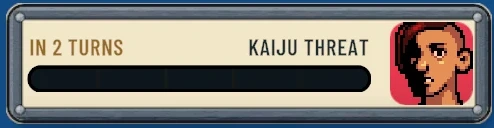
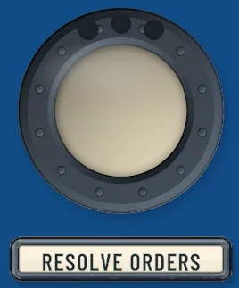

Chapter 02: Project Titan
Lead designer for the UI and HUD of a tactical skirmish auto battler with a twist.
- Role
- UI/UX owner, programmer
- Engine
- Unity, uGUI + TextMeshPro
- Team
- Small team, working in Notion and Discord
- Status
- In development, 2026
Screen Guide: Skirmish HUD
Built in Unity uGUI

- 1. Commander portrait
Shows whose turn it is, so the meter always has a face attached.
- 2. Kaiju threat meter
Every kill feeds this shared meter, with a countdown to the Kaiju's arrival. It makes the risk readable at a glance.
- 3. Unit Inspector
Explains the next step in plain words: select an ally, then click a reachable tile.
- 4. Orders
Attack, Hold, Defend and Retreat for the selected unit. They stay greyed until a unit is selected.
- 5. Command seal
Stamped with the faction's emblem. Translucent on hover, full opacity when pressed, lit once every unit has orders.
The Skirmish HUD in engine. Hover or focus an entry to find it on the screen.
A HUD that narrates
Titan's hook is risk: every kill feeds a shared meter that can summon a Kaiju neither player fully controls. The HUD has to make that tension readable at a glance, keep the board clear, and reskin cleanly for three factions.
Visual direction landed on cream panels with heavy dark outlines and riveted metal borders, so it is cartoony, easy to read and easy to swap.

Scope first
The first pass covered the Skirmish HUD only. The War Room and formation builder are later passes. Keeping scope tight meant the team could react to something concrete instead of a sprawling system.
Three distinct directions
I wireframed three structurally different layouts in grayscale before any colour decisions:
- Command Table: a diegetic, holographic table the player leans over.
- Clean Tactical: a readability-first baseline.
- Card-Forward: the hand dominates the screen.
Grayscale kept the conversation on hierarchy and layout. Colour came later, built on a neutral dead-world base with faction colours layered on top.
The finding that shaped everything
I mapped every HUD element against every phase of a round in a phase-state matrix. Four of the seven phases have no player input at all. That led to two terms the team now uses:
Design vocabulary
FOCUS is where the hands go: interactive and dominant. BEAT is where the eyes go: dominant but not interactive. Titan spends most of its round in BEAT, so the HUD's job is often to tell the story of what just happened.
Readability risks, called early
Blue-for-you, red-for-them collides with a faction whose identity colour is red, and it breaks for red-green colourblind players. I flagged friend-or-foe as the sharpest open risk and proposed non-colour carriers: base rings, silhouettes and outline weight.
Designing for the engine
Moving to Unity's uGUI changed what was cheap and what was expensive, so the designs account for it:
- Live elements like the threat meter and health bars sit on their own dynamic canvas, since any change rebuilds the whole canvas mesh.
- A click-through policy for the HUD, because every graphic blocks raycasts by default and the HUD floats over a clickable board.
- Faction reskins through a theme asset rather than a prefab per faction, decided before component specs were drawn.
The command seal
The team replaced a plain Resolve Orders button with a modular command seal stamped with the current faction's emblem. It sits translucent on hover, goes full opacity when pressed, and lights up once every unit has orders, so readiness is visible without reading a word.

What I took from it
Mapping state before drawing screens saved the team from designing controls for phases where the player cannot act. It is the same habit that keeps an operator screen honest, applied to a game.